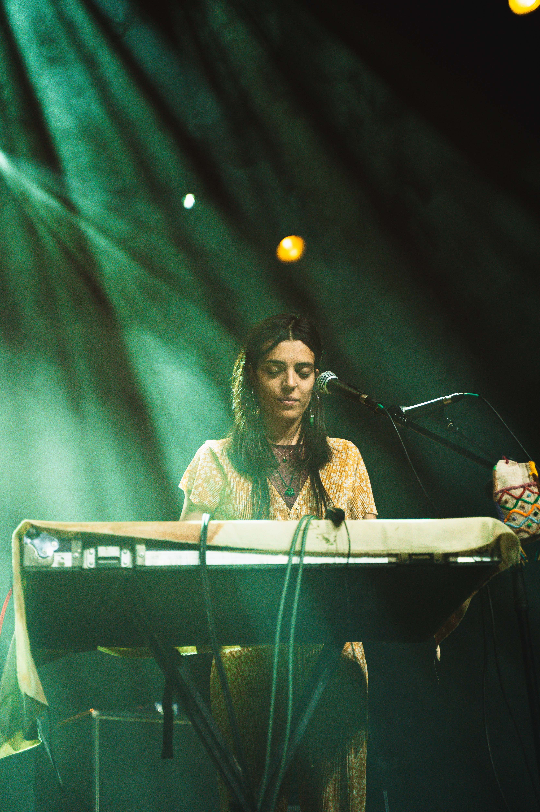

/ Upcoming Dates /
- Cais à Noite — Ílhavo (PT),
03.06.2022 (Xinobi Live) - Lux Frágil — Lisbon (PT),
09.06.2022 (Xinobi Live) - Festival à Porta — Leiria (PT),
17.06.2022 (Meta_) - Festival Rio Loco — Toulouse (FR),
19.06.2022 (Meta_) - Festival EuropaVox (FR),
02.07.2022 (Xinobi Live) - NOS Alive — Lisbon (PT),
08.07.2022 (Meta_)
/ MÓNADA — European Tour 2020 /
-
Manchester
[SofarSounds] (13.02.2020) -
London
[SofarSounds] (15.02.2020) -
Stockholm
[Snotty Seaside] (19.02.2020) -
Berlin
[Madame Claude] (21.02.2020) -
Madrid
[SofarSounds] (26.02.2020) -
Barcelona
[Bodega Saltó] (01.03.2020)

/ Past Shows /
-
Xinobi Live @ Tourneé Océane
[Brest] (2022) -
Xinobi Live @ SuiteMusic Festival
[Porto] (2022) -
Festival Santos da Casa
[Coimbra] (2022) -
CCVF
[Guimarães] (2022) -
Maus Hábitos
[Lisbon] (2022) -
Ciclo Albardeira
[Ourém] (2021) -
Ciclo de Cantautores 4820
[Fafe] (2021) -
Feira do Livro
[Porto] (2021) -
Festival Oeiras Ignição Gerador
[Oeiras] (2021) -
Festival Me & My Loopstation
[Stúbal] (2021) -
Maus Hábitos
[Porto] (2020) -
Festival Play it Safe
[Porto] (2020) -
Festival Música da Casa
[Coimbra] (2020) -
Festival Emergente
[Lisbon] (2020) -
Festival Percursos Sonoros
[Oliveira de Azemeis] (2020) -
OneManBand Festival
[Portalegre] (2020) -
Crew Hassan
[Lisbon] (2019) -
SofarSounds
[Porto] (2019) -
Festival EcoFest Curviã
[Guimarães] (2019) -
Festival Um ao Molhe
[Elvas] (2019) -
Festival Quintanilha Rock
[Bragança] (2019) -
MusicBox
[Lisbon] (2019) -
Tedx Porto
[Porto] (2018) -
Festival A Salto
[Elvas] (2018) -
Festival Guimarães Noc-Noc
[Guimarães] (2018) -
Festival Bons Sons
[Cem Soldos] (2018)
/ Guest Shows /
-
:Papercutz
[Sons à Sexta] (2021) -
Luiz Gabriel Lopes
[Espaço Compasso] (2021) -
Labaq
(2020)